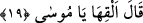
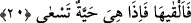

Ben Muhammed (a.s.)’ın kadrinin ne kadar yüce olduğunu; Halil (Hz. İbrahim), Kelîm
(Hz. Mûsâ) ve Ruh (Hz. İsa) yerde otururken O’nun tek başına tahtta oturduğunu
düşünürken birisi şiddetli bir şekilde ayağıyla dürtüp beni uyandırdı. Baktım ki
Mescid-i Aksânın kandillerini yakan kayyımimiş. Bana şöyle dedi: “Hayrete düşme!
Çünkü bütün mahlûkât onun nurundan yaratılmıştır.” Ben bu söz üzerine düşüp bayıldım.
Namaza kalktıklarında ayıldım ve kayyımı aramaya başladım. Fakat bugüne kadar onu
bulamadım.”
Bu yüzdendir Kasîde-i Bürde’de şöyle denir:
Nisbet et O’nun zâtına dilediğin şerefi
Nisbet et O’nun kadrine dilediğin azameti
Başka bir şair de şöyle demiştir:
Nebîler topluluğunun başı ve müttakîlerin ulusu,
Ev ednâ makamının sultanı, ümmetlerin önderi!
19. “Allah: “Yere at onu, ey Mûsâ!” dedi.
“Allah:” Hz. Mûsâ’ya: Asânın aklına gelmeyen diğer mârifetlerini görmek için “Yere
at onu, ey Mûsâ!” dedi.”
20. Onu hemen yere attı. Bir de ne görsün, hızla sürünen bir yılan değil mi!
“Onu hemen yere attı.” Kâşifî şöyle der: “Mûsâ (a.s.) ayakkabıları gibi asâyı da
atmak gerektiğini zannetti. Asâyı da arkasına bıraktı. Derhal Mûsâ (a.s.)’ın kulağına çok
büyük bir ses geldi. O da geri döndü. “Bir de ne görsün, hızla sürünen bir yılan değil
mi?!” Orada asâ bir ejderha olmuş her tarafa süratle ve aceleyle hareket ediyordu.
Rivâyete göre Mûsâ (a.s.) asâyı yere atınca asâ, kendi büyüklüğünde sarı bir yılan
oldu. Sonra kalınlaşıp büyüdü. Bu sebeple o bazen ince yılana (cânn) da benzetilmiştir.
Nitekim Allah Teâlâ: “
(yılan gibi)” (en-Neml, 27/10) buyurmuştur. Bu onun
başlangıçtaki durumuna göredir. Bazen de daha sonra irileştiği için ‘su‘bân (büyük
yılan)’ diye isimlendirilmiştir. Bu onun son durumuna göredir. Burada ise onun hem
küçüklük hem de büyüklük hâline delâlet etsin diye “hayye (yılan)” kelimesi
kullanılmıştır. Açık olan şu ki asâ, ilk anda iri bir yılan (su‘bân) olmuştur. Bu makama